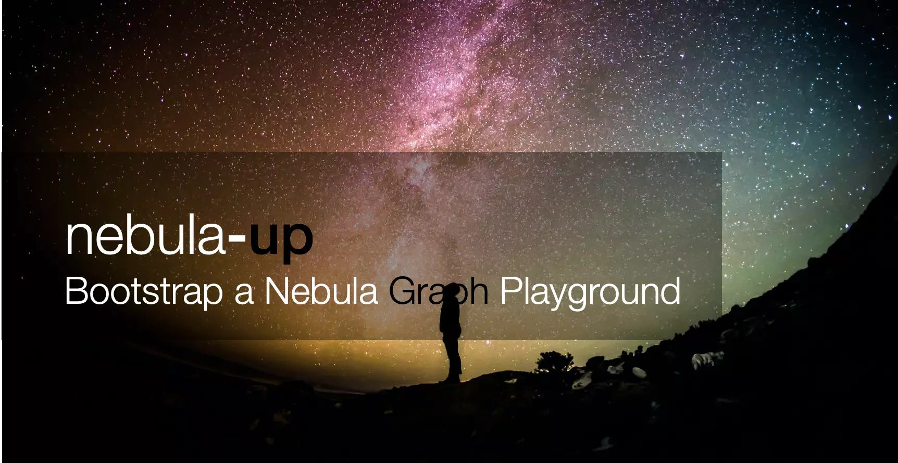

Nebula-Up，一键拉起一个 Nebula 测试环境

目录
Nebula-up 可以一键拉起一个 Nebula 测试环境，支持 mscOS，Windows 10，CentOS 和 Ubuntu。

Nebula-Up is PoC utility to enable developer to bootstrap an nebula-graph cluster with nebula-graph-studio(Web UI) + nebula-graph-console(Command UI) ready out of box in an oneliner run. All required packages will handled with nebula-up as well, including Docker on Linux(Ubuntu/CentOS), Docker Desktop on macOS(including both Intel and M1 chip based), and Docker Desktop Windows.
Also, it’s optimized to leverage China Repo Mirrors(docker, brew, gitee, etc…) in case needed enable a smooth deployment for both Mainland China users and others.
macOS and Linux with Shell:
|
|

Windows with PowerShell(Working In Progress):
|
|
TBD:
- Finished Windows(Docker Desktop instead of the WSL 1&2 in initial phase) part, leveraging chocolatey package manager as homebrew was used in macOS
- Fully optimized for CN users, for now, git/apt/yum repo were not optimised, newly installed docker repo, brew repo were automatically optimised for CN internet access
- With nebula-graph version specification support, now it’s hardcoded in 2.0.0-GA
- With uninstall/cleanup support
- Packaging similar content into homebrew/chocolatey?
- CI/UT